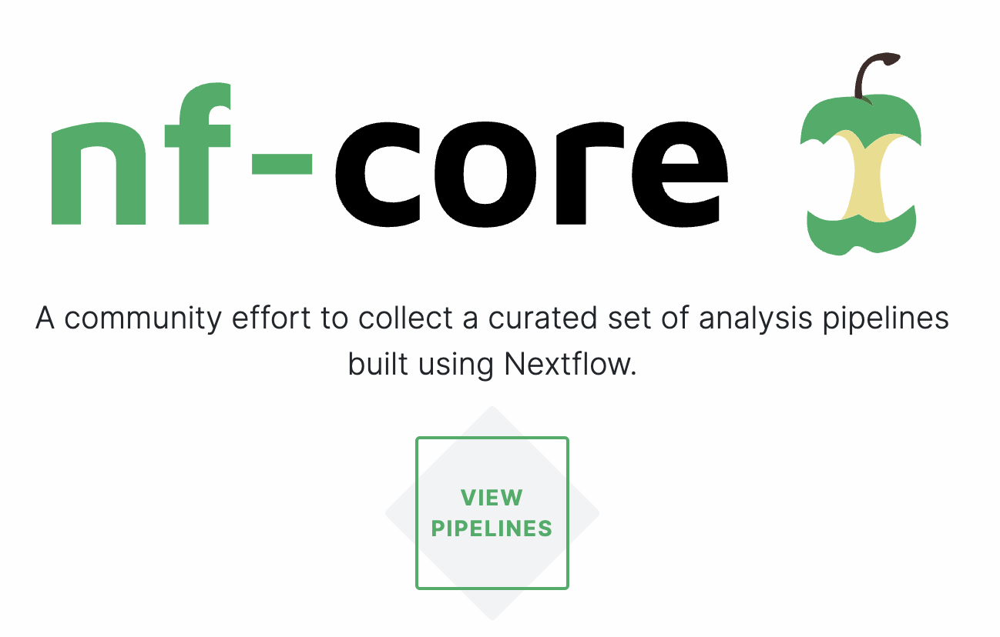

Pipelines and workflow tools
Week 6 - part I
Overview of this week
TODO
1 Pipelines
What do we mean by a “pipeline” or “workflow”? We may informally refer to any consecutive series of steps in an analysis as a pipeline or workflow. But here, I am using these words to mean a consecutive series of steps that can be executed from start to finish with a single command.
What are the advantages of creating a pipeline over having a collection of scripts that you run one-by-one as needed?
- It ensures you are including all necessary steps.
- The pipeline is a form of documentation of the steps taken.
- Rerunning everything is easier — both for yourself and others, improving reproducibility.
- Re-applying the same set of analyses in a different project is easier.
The runner scripts that you have been creating in the last two weeks occupy a middle ground between just having a collection of scripts, and between having a pipeline according to the definition above. We’ll get into this a little more below.
A simple RNA-seq example
Let’s think about this with a concrete example, namely a very simple RNA-seq analysis that:
- Trims reads in FASTQ files (independently for each sample)
- Aligns (maps) reads to a reference genome (independently for each sample)
- Creates a gene expression count table from the alignments (for all samples together)
between the steps: the output of one step is the input of the next.
For example, consider the below shell script, which is similar to the “runner scripts” we created last week, and adheres to the above definition of a pipeline:
#!/bin/bash
set -euo pipefail
# Each of the fictional scripts below takes two arguments: input and output
# Trim:
for R1 in data/fastq/*_R1.fastq.gz; do
bash scripts/trim.sh "$R1" results/trim
done
# Align (map):
for R1 in results/trim/*_R1.fastq.gz; do
bash scripts/map.sh "$R1" results/map
done
# Count alignments per sample per gene:
bash scripts/count.sh results/map results/count_table.txtChallenges with basic pipeline scripts
While it is straightforward to create a pipeline along these lines that functions at least in principle, you are likely to run into a number of challenges in practice.
First, how to rerun parts of the pipeline flexibly? This may be necessary after, e.g.:
- Some scripts failed for all or some samples
- You added or removed a sample
- You had to modify a script or settings somewhere halfway the pipeline.
Second, batch job submissions pose problems — here is the above script modified to submit batch jobs with sbatch instead of running the scripts directly with bash:
# Trim:
for R1 in data/fastq/*_R1.fastq.gz; do
sbatch scripts/trim.sh "$R1" results/trim
done
# Align (map):
for R1 in results/trim/*_R1.fastq.gz; do
sbatch scripts/map.sh "$R1" results/map
done
# Count alignments per sample per gene:
sbatch scripts/count.sh results/map results/count_table.txtWhat is the problem if you run this script all at once?
Steps that need output files from prior steps won’t wait for those prior steps!Potential solutions to these challenges
Stick to a runner script
The above example with thesbatchcommands is a perfect example of the runner scripts we’ve been practicing with. The steps/sections have to submitted one-by-one, so it is not a true pipeline. But that may well be OK — several of the pipeline advantages that we discussed above do apply. But besides reduced automation / ease of rerunning, this does not really address the challenge of having to flexibly rerun parts of the pipeline.Push the limits of the Bash and Slurm tool set
Work withifstatements, many arguments to scripts, and Slurm “job dependencies” (see some examples in the box below) — but this is very hard to manage for more complex workflows.Use a formal workflow management system.
This is what we’ll go into this week.
First, here are some low-tech, ad-hoc solutions to rerunning parts of the workflow:
Comment out part of the workflow — e.g., to skip a step:
# Trim: #for R1 in data/fastq/*_R1.fastq.gz; do # sbatch scripts/trim.sh "$R1" results/trim #done # Align (map): for R1 in results/trim/*_R1.fastq.gz; do sbatch scripts/map.sh "$R1" results/map done # Count alignments per sample per gene: sbatch scripts/count.sh results/map results/count_table.txtMake temporary changes — e.g., to only run a single added sample:
# Trim: #for R1 in data/fastq/*_R1.fastq.gz; do R1=data/fastq/newsample_R1.fastq.gz sbatch scripts/trim.sh "$R1" results/trim #done # Align (map): #for R1 in results/trim/*_R1.fastq.gz; do R1=results/trim/newsample_R1.fastq.gz sbatch scripts/map.sh "$R1" results/map #done # Count - NOTE, this steps should be rerun as a whole: sbatch scripts/count.sh results/map results/count_table.txt
Second, here are some more bespoke code-bases solutions:
Command-line options and
if-statements to flexibly run part of the pipeline (and perhaps change settings):trim=$1 # true or false map=$2 # true or false count=$3 # true or false if [[ "$trim" == true ]]; then for R1 in data/fastq/*_R1.fastq.gz; do bash scripts/trim.sh "$R1" results/trim done fi if [[ "$map" == true ]]; then for R1 in results/trim/*_R1.fastq.gz; do bash scripts/map.sh "$R1" results/map done fi if [[ "$count" == true ]]; then bash scripts/count.sh results/map results/count_table.txt fiSlurm job dependencies — in the example below, jobs will only start after their “dependencies” (jobs whose outputs they need) have finished:
for R1 in data/fastq/*_R1.fastq.gz; do # Submit the trimming job and store its job number: submit_line=$(sbatch scripts/trim.sh "$R1" results/trim) trim_id=$(echo "$submit_line" | sed 's/Submitted batch job //') # Submit the mapping job with the condition that it only starts when the # trimming job is done, using '--dependency=afterok:': R1_trimmed=results/trim/$(basename "$R1") sbatch --dependency=afterok:$trim_id scripts/map.sh "$R1_trimmed" results/map done # If you give the mapping and counting jobs the same name with `#SBATCH --job-name=`, # then you can use '--dependency=singleton': the counting job will only start # when ALL the mapping jobs are done: sbatch --dependency=singleton scripts/count.sh results/map results/count_table.txt

Two quotes from this article:
Typically, researchers codify workflows using general scripting languages such as Python or Bash. But these often lack the necessary flexibility.
Workflows can involve hundreds to thousands of data files; a pipeline must be able to monitor their progress and exit gracefully if any step fails. And pipelines must be smart enough to work out which tasks need to be re-executed and which do not.
2 Workflow management systems
Pipeline/workflow tools, often called “workflow management systems”, provide ways to formally describe and execute pipelines. Advantages of formal workflow management are improved:
- Automation
- Detect & rerun upon changes in input files and failed steps.
- Easily run for other data sets.
- Automate Slurm job submissions.
- Integration with software management.
- Flexibility, portability, and scalability
By separating generic pipeline nuts-and-bolts one the one hand, and the following two on the other hand:- Run-specific configuration — samples, directories, settings/parameters.
- Things specific to the run-time environment (laptop vs. cluster vs. cloud).
The two most commonly used command-line based options in bioinformatics are Nextflow and Snakemake. Both have their pros and cons, and I taught Snakemake in an earlier iteration of this course, but we’ll use Nextflow here.
Learning to write pipelines
Most workflow tools are small “domain-specific” languages (DSLs), often a sort of extension of a more general language: for example, Python for Snakemake, and Groovy/Java for Nextflow.
Learning one of these tools is harder than it should be, in my opinion — a truly excellent workflow tool does not yet exist, and may not come to do so in the near-future either as existing options have become entrenched. Therefore, learning to write your own pipelines with one of them is probably only worth it if you plan to regularly work on genomics/bioinformatics projects.
3 nf-core pipelines
There are also publicly available pipelines that you can use, and Nextflow has by far the best ecosystem of those. The “nf-core” initiative (https://nf-co.re, Ewels et al. 2020) curates a set of best-practice, flexible, and well-documented pipelines written in Nextflow:

For many common omics analysis types, nf-core has a pipeline. It currently has 58 complete pipelines — these are the four most popular ones:
Let’s take a closer look at the most widely used one, the rnaseq pipeline:

Besides the advantages mentioned above, using such a pipeline … TODO .. not having to choose programs and their parameters.